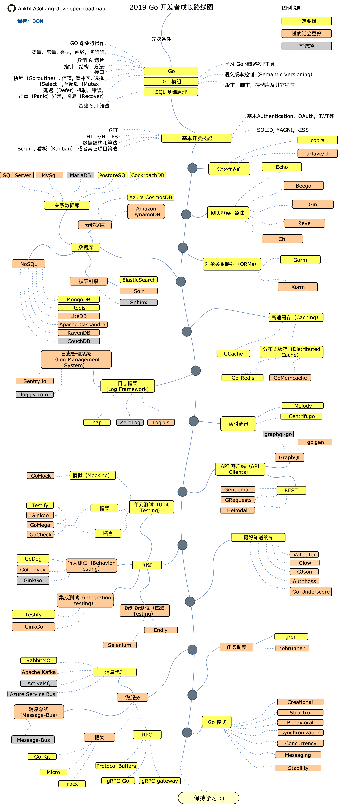

README
一 笔记说明
这份笔记是自学Golang时的资料总结，结合了很多书籍、博客以及开源作品的内容，同时也收到了很多反馈和建议，笔记仍然会在学习旅程中不断更新，绝对不鸽。
基于 Go 的算法笔记一样计划之列，不过算法过于庞大，被独立放置在了overnote系列中自成一系。
二 Go 学习路径图

三 Go 相关书籍
语法：
- 《Go 程序设计语言》：Go 语言圣经，中译资料
- 《Go 语言趣学指南》
- 《Go 专家编程》
实战：
- 《GoWeb 编程》：Go 语言 Web 编程基础
- 《Go 并发编程实战》：非常好的 go 并发原理解读书籍，但语言组织欠佳
- 《Go 语言高并发与微服务实战》：试看中
- 《Go 语言编程之旅：一起用 Go 做项目》：试看中
深入：
- 《Go 语言学习笔记》：言简意赅，深入浅出，力荐
- 《Go 语言高级编程》：深入理解 Go 必备，开源文档
附录：笔记汇总
OverNote地址：https://github.com/overnote 笔者的地址：https://github.com/ruyuejun
OverNote 分类：